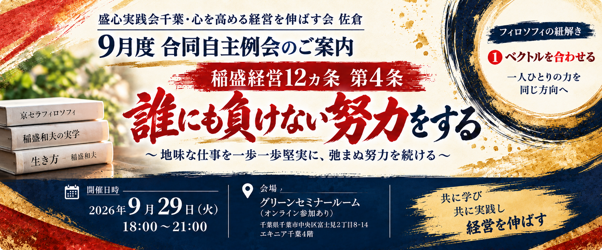
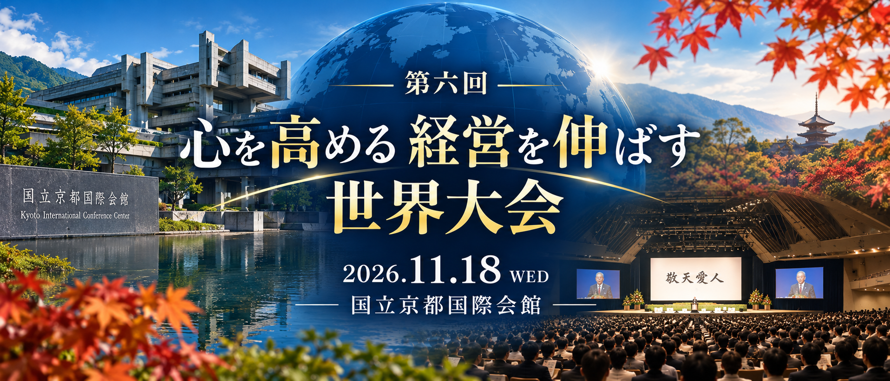

今後の予定
2026年9月
9月度 合同自主例会

稲盛経営12ヵ条 第4条
「誰にも負けない努力をする」
「誰にも負けない努力をする」
～地味な仕事を一歩一歩堅実に、
弛まぬ努力を続ける～
盛心実践会千葉・
心を高める経営を伸ばす会 佐倉
2026年11月18日（水）10:30～
第六回
心を高める 経営を伸ばす 世界大会
心を高める 経営を伸ばす 世界大会

📍 京都国際会議場
「心を高め、経営を伸ばす」という学びを、 全国・世界の仲間とともに深める大会です。
活動スケジュールについて
盛心実践会千葉では、稲盛経営哲学を学び、 日々の経営で実践することを大切にしています。
今後開催する勉強会・例会・大会などを、 このページで随時ご案内します。
盛心実践会千葉では、稲盛経営哲学を学び、 日々の経営で実践することを大切にしています。
今後開催する勉強会・例会・大会などを、 このページで随時ご案内します。